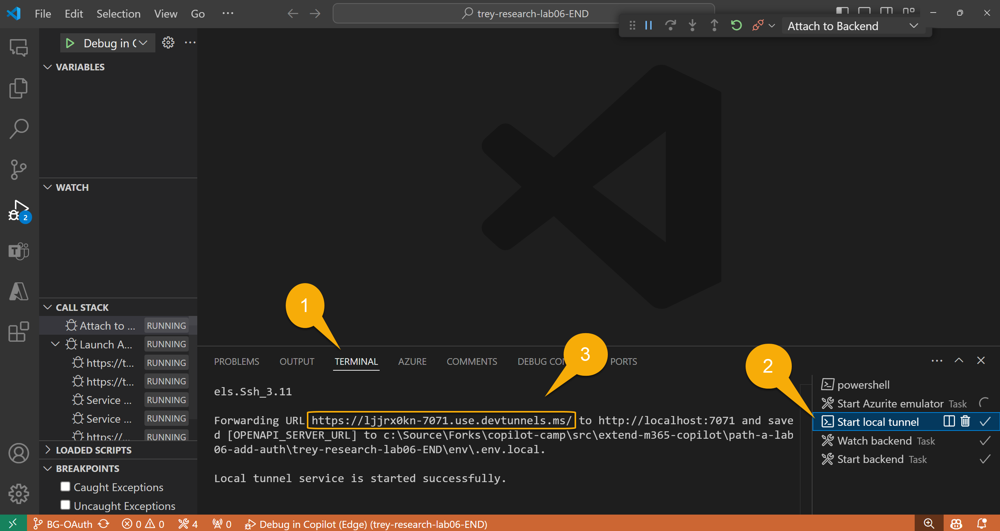
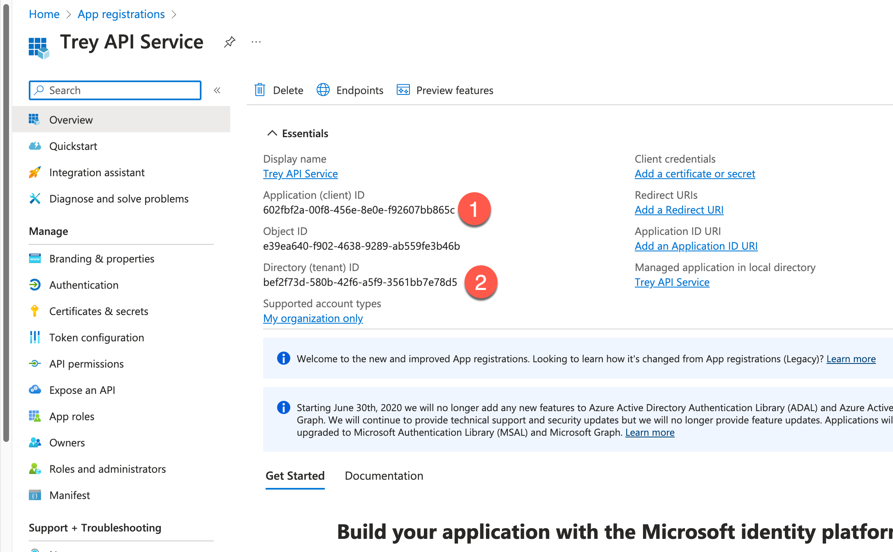
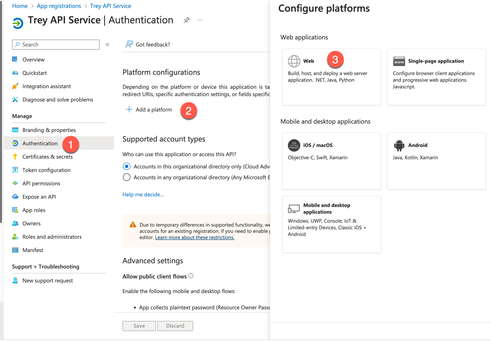

Lab E6c - Add Entra ID authentication with Single Sign-on
In this lab you will add Microsoft Entra ID SSO authentication enabling users to authenticate with their existing Entra ID credentials.
Do these labs if you want to build a Declarative agent where Microsoft 365 provides the AI model and orchestration
- üèÅ Welcome
- üîß Set up
- üß∞ Declarative agent fundamentals
- üõ†Ô∏è Build and integrate API from scratch
- üîê Authentication
- üîå Integration
Note
In the finished sample we have used persistent developer tunnel so you will have to make adjustments if you are not using persistent developer tunnel. Check Exercise 1.
In this lab, as you register your API, you'll need to save a few values from the Entra ID portal and Teams Developer Portal for use in later steps. Here's what you'll need to save:
API Base URL:
API's Entra ID application ID:
API's Tenant ID:
SSO Client registration:
API ID URI:
Exercise 1: Set up a persistent developer tunnel (optional)
By default, Agents Toolkit creates a new developer tunnel - and thus a new URL for accesing your locally running API - every time you start the project. Normally this is fine because Agents Toolkit automatically updates the URL where needed, but since this lab will be a manual setup, you'll have to manually update the URL in Entra ID and in Teams Developer Portal each time you start the debugger. For that reason, you may wish to set up a persistent developer tunnel with a URL that does not change.
If you don't want to set up a persistent tunnel, open this note ▶▶▶
You are free to skip this exercise and use the developer tunnel provided by Agents Toolkit. Once your project is running, you can copy this URL from the terminal tab 1️⃣ by choosing the "Start local tunnel" terminal 2️⃣; copy the Forwarding URL 3️⃣. Note this URL will change every time you start the project, and you will need to manually update the app registration reply URL (exercise 2 step 1) and the Teams Developer Portal URL (exercise 5 step 1). 
Step 1: Install the developer tunnel CLI
Here are the command lines for installing the developer tunnel. Full instructions and download links for the Developer Tunnel are here.
| OS | Command |
|---|---|
| Windows | winget install Microsoft.devtunnel |
| Mac OS | brew install --cask devtunnel |
| Linux | curl -sL https://aka.ms/DevTunnelCliInstall | bash |
Tip
You may have to restart your command line to update the file path before devtunnel commands will work.
Once you have it installed, you'll need to log in. You can use your Microsoft 365 account to log in.
devtunnel user login
Be sure to leave the devtunnel command running as you do the exercises in this lab. If you need to restart it, just repeat the last command devtunnel user login.
Step 2: Create and host the tunnel
Then you'll need to set up a persistent tunnel to the Azure Functions local port (7071). You can use these commands and substitute your own name instead of "mytunnel" if you wish.
devtunnel create mytunnel -a --host-header unchanged
devtunnel port create mytunnel -p 7071
devtunnel host mytunnel
The command line will display the connection information, such as:

Copy the "Connect via browser" URL and save it as the "API Base URL".
Step 3: Disable the dynamically created tunnel in your project
If your project is running locally, stop it. Then edit .vscode\tasks.json and locate the "Start Teams App Locally" task. Comment out the "Start local tunnel" dependency and add the "Start Azurite emulator" dependency instead. The resulting task should look like this:
{
"label": "Start Teams App Locally",
"dependsOn": [
"Validate prerequisites",
//"Start local tunnel",
"Start Azurite emulator",
"Create resources",
"Build project",
"Start application"
],
"dependsOrder": "sequence"
},
Step 4: Manually override the server URL
Open env/.env.local and change the value of OPENAPI_SERVER_URL to the persistent tunnel URL. This is the API base URL that is needed for the configuration in the steps later.
Exercise 2: Register an Entra ID application for your API
Step 1: Add a new Entra ID app registration
Browse to the Entra ID admin center either via the Microsoft 365 Admin center or directly at https://entra.microsoft.com/. Make sure you are logged into your development tenant and not some other.
Once you're there, click "Identity" 1️⃣, then "Applications" 2️⃣, and then "App registrations" 3️⃣. Then click the "+" 4️⃣ to add a new app registration.

Give your application a unique and descriptive name such as "Trey API Service" 1️⃣. Under "Supported account types", select "Accounts in this organizational directory only (Microsoft only - single tenant) 2️⃣.
Then click "Register" 3️⃣ to register your application.
Step 2: Copy application info to a safe place
Copy the Application ID (also called the Client ID) 1️⃣ which is the API's Entra ID application ID and Directory (tenant) ID 2️⃣ that is needed for the configuration in the steps later.

Exercise 3: Register Microsoft Entra SSO client ID in the Teams Developer Portal
Now you're API is all set up with Microsoft Entra ID, but Microsoft 365 doesn't know anything about it. To ensure secure connection of your API without requiring extra credentials, let's register it in the Teams Developer Portal.
Step 1: Register an SSO client in Teams developer portal
Browse to the Teams Developer Portal at https://dev.teams.microsoft.com. Select "Tools" 1️⃣ and then "Microsoft Entra SSO client ID registration." 2️⃣.
Select Register client ID and fill up the values.
| Field | Value |
|---|---|
| Name | Choose a name you'll remember |
| Base URL | API base URL |
| Restrict usage by org | select "My organization only" |
| Restrict usage by app | select "Any Teams app" |
| Client (application) ID | API's Entra ID application ID |
Now once you select Save, the registration generates a Microsoft Entra SSO registration ID and an Application ID URI. Copy them to a note, to configure the plugin manifest file to enable SSO.
If you didn't make a persistent developer tunnel URL...
...you will have to update the "Base URL" field with your new tunnel URL each time you start your application in Agents Toolkit
Exercise 4: Update your application package
Step 1: Update the Plugin file
Open your working folder in Visual Studio Code. In the appPackage folder, open the trey-plugin.json file. This is where information is stored that Copilot needs, but is not already in the Open API Specification (OAS) file.
Under Runtimes you will find an auth property with type of "None", indicating the API is currently not authenticated. Change it as follows to tell Copilot to authenticate using the Microsoft Entra SSO registration ID you saved in the vault.
"auth": {
"type": "OAuthPluginVault",
"reference_id": "<Microsoft Entra SSO registration ID>"
},
Exercise 5: Update the API's Microsoft Entra app registration
Step 1: Update Application ID URI
- Go back to the Microsoft Entra admin center and find the Microsoft Entra app registration of your API, we called it here Trey API Service.
- Open Expose an API and add/edit Application ID URI. Paste the entire Application ID URI generated by the Teams developer portal here and select Save
Step 2: Add API Scope
In order to validate calls to your API, you need to expose an API Scope, which represents the permission to call the API. Though these could be very specific - allowing permission to do specific operations via the API - in this case we'll set up a simple scope called "access_as_user".
Under "Add a scope" enter "access_as_user" as the scope name 1️⃣. Fill in the remaining fields as follows:
| Field | Value |
|---|---|
| Who can consent? | Admins and users |
| Admin consent display name | Access My API as the user |
| Admin consent description | Allows an API to access My API as a user |
| User consent display name | Access My API as you |
| User consent description | Allows an app to access My API as you |
| State | Enabled |
When you're done, click "Add Scope" 2️⃣.

Step 3: Add authorized client apps
Select Add a client application 1️⃣ in the same Expose an API page and add the client ID of Microsoft's enterprise token store, ab3be6b7-f5df-413d-ac2d-abf1e3fd9c0b 2️⃣. Authorize it for the access scope by selecting 3️⃣. Select Add application 4️⃣
Step 4: Redirect URIs for Authentication
Now in the left navigation, go to Authentication 1️⃣ , Add a platform 2️⃣, select Web 3️⃣.

Paste the url https://teams.microsoft.com/api/platform/v1.0/oAuthConsentRedirect as the Redirect URIs 1️⃣ and select Configure 2️⃣.
Exercise 6: Update the application code
Step 1: Install the JWT validation library
From a command line in your working directory, type:
npm i jwt-validate
This will install a library for validating the incoming Entra ID authorization token.
Warning
Microsoft does not provide a supported library for validating Entra ID tokens in NodeJS, but instead provides this detailed documentation on how to write your own. Another useful article is also available from Microsoft MVP Andrew Connell. This lab uses a community provided library written by Waldek Mastykarz, which is intended to follow this guidance. Note that this library is not supported by Microsoft and is under an MIT License, so use it at your own risk.
Step 2: Add environment variables for your API
In the env folder in your working directory, open .env.local and add these lines for your API Service app's tenant ID, application ID URL
APP_ID_URI=<Application ID URI>
API_TENANT_ID=<Directory (tenant) ID>
Generate Application ID URI manually
In case the Application ID URI isn't available, please construct it using the below steps temporarily:
Go to Base64 Decode and Encode -
Copy and paste the auth registration ID generated in Exercise 3, Step 1 and decode.
Construct the application ID URI using the second part of the decoded value (after ##) as highlighted below – api://auth-
To make these values available inside your code running in Agents Toolkit, you also need to update the teamsapp.local.yml file in the root of your working folder. Look for the comment "Generate runtime environment variables" and add the new values under the STORAGE_ACCOUNT_CONNECTION_STRING:
APP_ID_URI: ${{APP_ID_URI}}
API_TENANT_ID: ${{API_TENANT_ID}}
The finished yaml should look like this:
- uses: file/createOrUpdateEnvironmentFile
with:
target: ./.localConfigs
envs:
STORAGE_ACCOUNT_CONNECTION_STRING: ${{SECRET_STORAGE_ACCOUNT_CONNECTION_STRING}},
APP_ID_URI: ${{APP_ID_URI}}
API_TENANT_ID: ${{API_TENANT_ID}}
Step 3: Update the identity service
At this point, Single Sign-on should work and provide a valid access token, but the solution isn't secure unless the code checks to make sure the token is valid. In this step, you'll add code to validate the is token and extract information such as the user's name and ID.
In the src/services folder, open IdentityService.ts.
At the top of the file along with the other import statements, add this one:
import { TokenValidator, ValidateTokenOptions, getEntraJwksUri } from 'jwt-validate';
Then, right under the class Identity statement, add this line:
private validator: TokenValidator;
Now look for the comment
// ** INSERT REQUEST VALIDATION HERE (see Lab E6) **
Replace the comment with this code:
// Try to validate the token and get user's basic information
try {
const { APP_ID_URI, API_TENANT_ID } = process.env;
const token = req.headers.get("Authorization")?.split(" ")[1];
if (!token) {
throw new HttpError(401, "Authorization token not found");
}
// create a new token validator for the Microsoft Entra common tenant
if (!this.validator) {
// We need a new validator object which we will continue to use on subsequent
// requests so it can cache the Entra ID signing keys
// For multitenant, use:
// const entraJwksUri = await getEntraJwksUri();
const entraJwksUri = await getEntraJwksUri(API_TENANT_ID);
this.validator = new TokenValidator({
jwksUri: entraJwksUri
});
console.log ("Token validator created");
}
const options: ValidateTokenOptions = {
audience: APP_ID_URI,
issuer: `https://sts.windows.net/${API_TENANT_ID}/`,
scp: ["access_as_user"],
};
// validate the token
const validToken = await this.validator.validateToken(token, options);
userId = validToken.oid;
userName = validToken.name;
userEmail = validToken.upn;
console.log(`Request ${this.requestNumber++}: Token is valid for user ${userName} (${userId})`);
}
catch (ex) {
// Token is missing or invalid - return a 401 error
console.error(ex);
throw new HttpError(401, "Unauthorized");
}
Learn from the code
Have a look at the new source code. First, it obtains the token from the Authorization header in the HTTPs request. This header contains the word "Bearer", a space, and then the token, so a JavaScript split(" ") is used to obtain only the token.
Also note that the code will throw an exception if authentication should fail for any reason; the Azure function will then return the appropriate error.
The code then creates a validator for use with the jwks-validate library. This call reads the latest private keys from Entra ID, so it is an async call that may take some time to run.
Next, the code sets up a ValidateTokenOptions object. Based on this object, in addition to validating that the token was signed with Entra ID's private key, the library will validate that:
-
the audience must be the same as the API service app URI; this ensures that the token is intended for our web service and no other
-
the issuer must be from the security token service for our tenant
-
the scope must match the scope defined in our app registration, which is
"access_as_user".
If the token is valid, the library returns an object with all the "claims" that were inside, including the user's unique ID, name, and email. We will use these values instead of relying on the fictitious "Avery Howard".
If your app will be multi-tenant
Check the comments in the above code for notes about validating tokens for a multi-tenant app
Once the code has a userId it will look for a Consultant record for the user. This was hard-coded to Avery Howard's ID in the original code. Now it will use the user ID for the logged in user, and create a new Consultant record if it doesn't find one in the database.
As a result, when you run the app for the first time, it should create a new Consultant for your logged-in user with a default set of skills, roles, etc. If you want to change them to make your own demo, you can do that using the Azure Storage Explorer

Note that project assignments are stored in the Assignment table and reference the project ID and the assigned consultant's consultant ID.
Step 4: Work around library versioning issue
At the moment, the jwt-validate package throws typing error for @types/jsonwebtoken package.
To work around the issue, edit the tsconfig.json file, found at the root of the project, and add "skipLibCheck":true. This will be fixed in a future version of the library, and may no longer be necessary by the time you do the lab.
Exercise 7: Test the application
Before you test the application, update the manifest version of your app package in the appPackage\manifest.json file, follow these steps:
-
Open the
manifest.jsonfile located in theappPackagefolder of your project. -
Locate the
versionfield in the JSON file. It should look something like this:
"version": "1.0.0"
- Increment the version number to a small increment. For example, change it to:
"version": "1.0.1"
- Save the file after making the change.
Step 1: (Re)start the application
Restart the application if it was already running and open Trey Genie in Copilot app.
Prompt - "What projects am I assigned to?" After allowing the agent, you will be asked to sign in as below (this is one time)

Once you select the sign in button, you need to allow the application's API to access as the current user, so go ahead and give the permission by selecting "Accept."

From now on, the sign in will be smooth for the user when interacting with the agent, without having to sign in each time.

CONGRATULATIONS!
You have completed lab E6c, Add SSO!
Want to try something cool? How about adding a Copilot Connector to your solution?